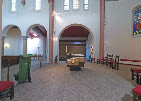
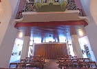
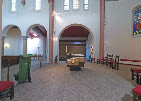
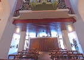

Оголошення: недільна Літургія
Запрошуємо на Літургію. Після — коротка зустріч.
Ми греко-католицька громада українців у Лозанні. Запрошуємо до спільної молитви, участі у Святих Таїнствах та життя парафії.
Найближчі богослужіння — у розділі Розклад.
 



Запрошуємо на Літургію. Після — коротка зустріч.
Щосуботи о 15:00. Родини запрошуються.
Збір речей для новоприбулих сімей.
Роздум про християнську надію.
Чому важлива Сповідь?
Як знаходити тишу та Божу присутність.
Ваша підтримка допомагає нам покривати оренду, катехитичні програми й волонтерські ініціативи. Дякуємо за жертовність!